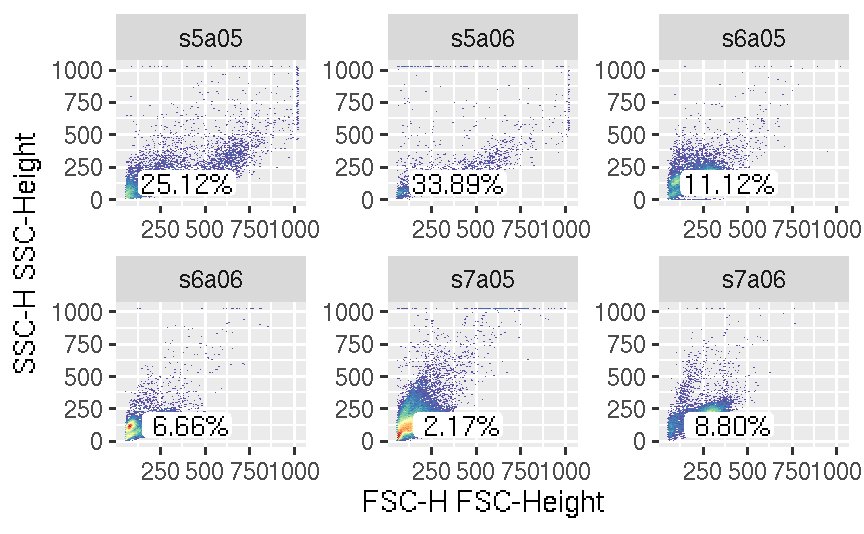
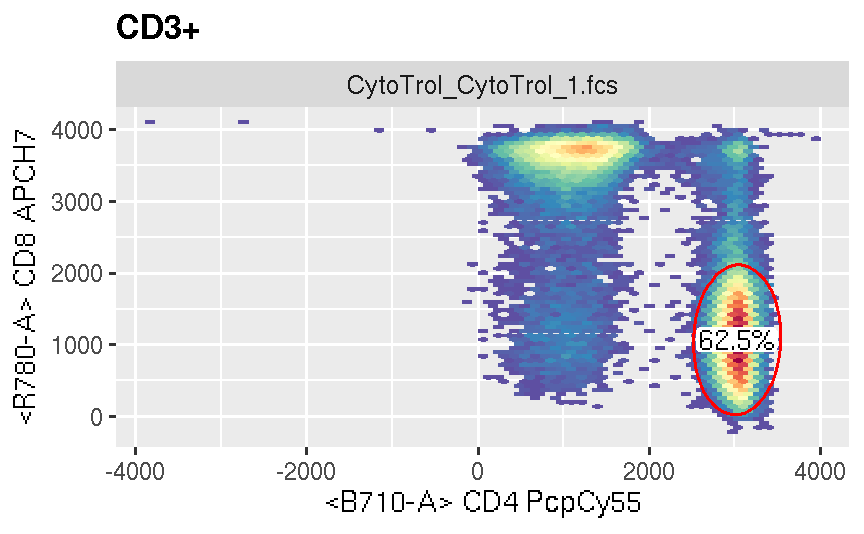
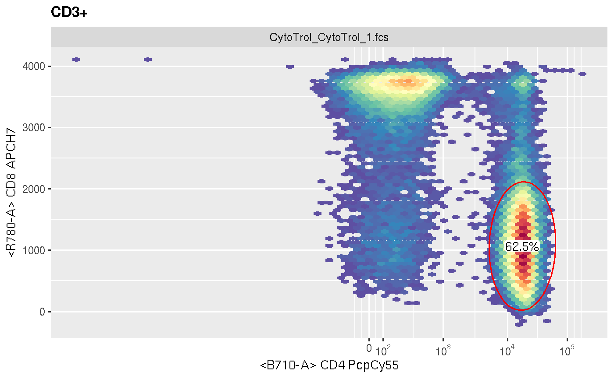
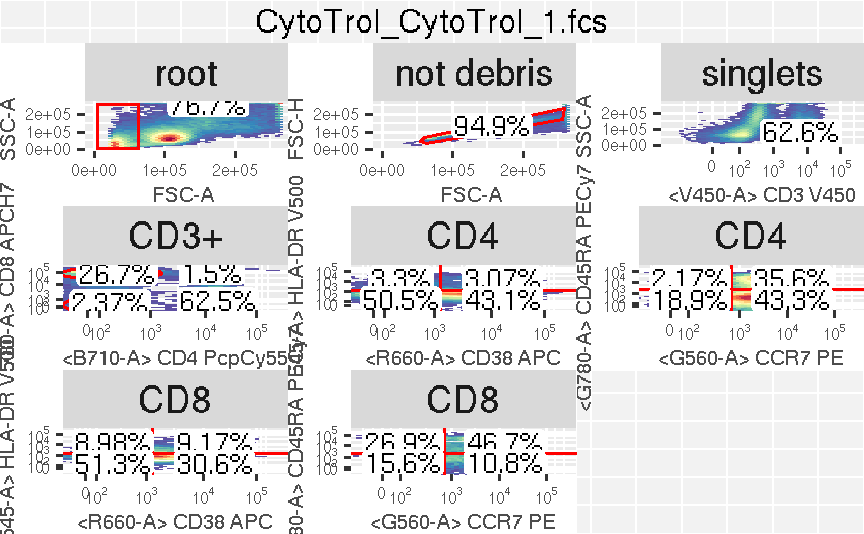

It tries to copy pData from ggcyto object to the gate layers so that the gate layer does not need to have `pd` to be supplied explicitly by users. It also calculates population statistics when geom_stats layer is added. It supports addition ggcyto layers such as 'ggcyto_par' and 'labs_cyto'.
e1 + e2
| e1 | An object of class |
|---|---|
| e2 | A component to add to |
ggcyto object
## flowSet data(GvHD) fs <- GvHD[subset(pData(GvHD), Patient %in%5:7 & Visit %in% c(5:6))[["name"]]] p <- ggcyto(fs, aes(x = `FSC-H`, y = `SSC-H`)) + geom_hex(bins = 128) #add rectangleGate layer (2d) rect.g <- rectangleGate(list("FSC-H" = c(300,500), "SSC-H" = c(50,200))) rect.gates <- sapply(sampleNames(fs), function(sn)rect.g) p + geom_gate(rect.gates) + geom_stats()## GatingSet dataDir <- system.file("extdata",package="flowWorkspaceData") gs <- load_gs(list.files(dataDir, pattern = "gs_manual",full = TRUE)) p <- ggcyto(gs, aes(x = CD4, y = CD8), subset = "CD3+") + geom_hex(bins = 64) p <- p + geom_gate("CD4") + geom_stats() #plot CD4 gate and it is stats p## GatingLayout #autplot for GatingSet dataDir <- system.file("extdata",package="flowWorkspaceData") gs <- load_gs(list.files(dataDir, pattern = "gs_manual",full = TRUE)) gh <- gs[[1]] p <- autoplot(gh)#>#>#>#>#>#>#>#>class(p)#> [1] "ggcyto_GatingLayout" #> attr(,"package") #> [1] "ggcyto"# customize the font size of strip text for each ggcyo plots contained in GatingLayout object p + theme(strip.text = element_text(size = 14))